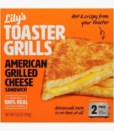

Home
Grilled Cheese

Ingredients
CAREFUL, ITS HOT!!
Nothing like that first, scolding, bite into a grilled cheese to go along with a bowl of tomato soup on a rainy afternoon.
- 2 Slices of bread
- 1 Slice of cheese
- 1 Jar of mayo
- 1 Stove-top pan
- 1 Butterknife
- 1 Plate
Instructions
- Preheat the pan on the stove to medium heat.
- Place a piece of cheese between the two slices of bread.
- Open the jar of mayo and use the butterknife to scoop and spread mayo on one side of the now closed peices of bread. (~1tsp)
- Once the pan is hot, place the sandwich into the pan with the mayo facing down.
- Use the butter knife to then scoop and spread more mayo on the bread facing up from the pan. (~1tsp)
- Flip the sandwich to the other side after aprx. 2mins and cook for an additional 2mins. If sides are not dark enough for you, continue to flip and cook until you are satisfied.
- Move grilled cheese from pan to a plate and enjoy!